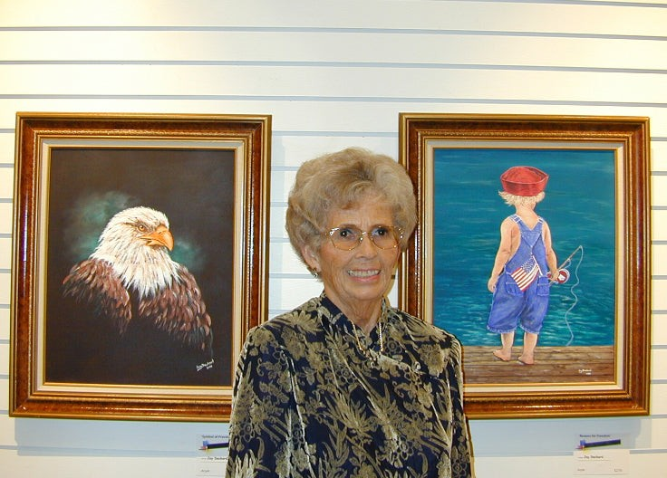

Original paintings by Kelli C Joy
A little wonder.
A world of possibility.
Paintings to dream with.
Inspired by Cinderella
A Hearts Dream
- Medium
- Acrylic on cotton canvas
- Size
- 24 × 30 in
- Finish
- Sealed with satin varnish
- Created
- 2025 · Florida, USA
Signed and includes a
Certificate of Authenticity.
Worldwide shipping
A closer look
The small things,
the magic.
Please note: Colors can change or appear different depending on your lighting conditions.
Behind the paintings
About the Artist
Kelli C Joy is a fine art painter whose work captures the deep emotional resonance of landscapes and the stories they hold.
Known for her signature “Storyscape” style, Kelli’s paintings are more than visual depictions of a landscape. They are narratives woven with memories, feelings, and meaning. Each brushstroke invites viewers into a moment suspended in time—a place where the land speaks and stories unfold.
A name, a memory,
a legacy.
Kelli’s journey into art began with a profound personal loss: the passing of her grandmother Joy, an immensely talented artist and a guiding light in Kelli’s life.
Inspired to honor her grandmother’s legacy, Kelli picked up the brush and discovered her own voice through painting. What began as a tribute soon became a calling. Kelli includes Joy in her artist name in honor of her grandmother.

Through her evocative Storyscapes, Kelli seeks to preserve and celebrate life’s moments, whether it’s a quiet shoreline, a windswept hill, or a familiar place made sacred by story. Her work is a heartfelt offering to those who, like her, find stories in the stillness of nature and beauty in remembering.